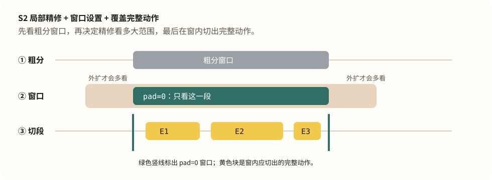

无法加载数据文件。请在本报告目录启动静态服务器后打开（例如
python3 serve_report.py --port 8765；需支持 HTTP Range 才能跳播视频片段），不要直接用受限的 file://。
导读：为什么要给第一视角人类视频做子任务标注
第一视角（egocentric）人类视频通常由头戴相机拍摄，记录人在真实环境中完成日常操作的过程，例如在厨房切菜、在工位装配零件或在商店整理货架。相机随头部运动，双手及其操作对象构成画面的主体；场景、光照、遮挡以及操作中的失败与重试均自然发生，而非来自预设的实验室环境。近年来，EgoVerse8 7 9
这类数据对机器人学习的潜在价值首先来自操作语义的可迁移性。尽管人手与机器人末端执行器的形态不同，物体状态、操作目标以及「根据观测选择动作」的高层语义仍有相通之处。因此，人类操作视频可用于视觉—语言—动作（VLA）模型的预训练，再通过真机数据将动作空间适配到具体机器人本体1
原始第一视角视频本身可以用于视频生成和世界模型训练；结合手部重建得到的腕部轨迹，还可以提供弱动作监督。这里称为「弱监督」，是因为腕部轨迹只能近似描述手部运动，并不包含机器人控制指令、接触力或执行器状态，也未必能直接映射到具体机器人本体。然而，这些信号通常不显式说明当前正在执行哪项操作，以及该操作何时完成。这类时间对齐的高层语义正是许多机器人策略所需要的监督。VLA 训练样本通常由「观测、语言指令、动作」组成，其中语言指令必须与相应的时间区间对齐。π0.5 等层级模型还会先预测高层子任务指令，再以此为条件生成低层动作1
自动完成这两项任务并不容易。第一视角画面随头部运动，手部经常遮挡操作对象；相邻动作之间缺少清晰停顿，细粒度操作又可能连续发生。人工逐段标注难以扩展至千小时规模，因此需要可审计、可复现且成本可控的自动标注流程。
TL;DR
Segment F1（分段得分）
0.2031
470 个参考片段中，79 个与预测片段的配对通过时间匹配标准。
配置：Qwen3.6-27B · 时间戳网格 · 粗分后局部精修
Label Acc（固定分段标注得分）
55.7%
470 个固定分段中，262 个描述通过语义匹配标准。
配置：Qwen3.6-27B · 原始帧 · 固定人工分段
E2E F1（端到端整流程得分）
0.1542
60 个片段同时通过时间匹配与语义匹配标准。
配置：Qwen3.6-27B 分段 + Qwen3.5-397B-A17B 候选判别器
实验范围： WGO-Bench 的第一视角人类子集 HomER，共 25 个视频、470 个人工标注片段。分段与描述均由开放权重 Qwen 视觉语言模型生成；Gemini-3.5-Flash 仅用于离线判断描述是否与人工标注语义一致。三类指标的完整定义见 §1 。
先选对模型，再考虑复杂的视觉输入增强。 给定人工分段、只评估片段描述时，Qwen3.6-27B 使用原始帧取得 55.7% 的固定分段标注得分；改用多帧拼图或叠加启发式视觉提示后，得分分别降至 52.8% 和 50.6%。在输入和提示词完全相同的分段实验中，Qwen3.6-27B 的分段得分为 0.1278，高于 Qwen3.5-397B-A17B 的 0.0952。就本组实验而言，模型选择带来的收益大于额外的视觉输入技巧。最佳分段方案是「整集粗分 + 局部精修」。 系统先用时间戳网格浏览完整视频并给出粗边界，再在每个粗边界附近重新判断动作起止。相较腕部速度规则基线，这一方案将分段得分从 0.0953 提升至 0.2031 ，并在 470 个人工参考片段中找到 79 个合格的时间匹配。Macrodata 公布的同范围 Gemini 分段得分为 0.227，与本方案相差 0.024。分段和描述需要不同的视觉输入。 判断动作边界时，模型需要观察较长时间范围内的变化，因此带时间戳的图片网格更有效；边界已经给定后，模型需要看清片段内的手部和物体细节，此时原始帧更有效。加入相邻片段不但没有提高固定分段标注得分，还会把相邻动作误写进当前描述。端到端整流程目前首先受分段质量限制。 最佳方案生成 308 个预测片段，但与 470 个人工参考片段完成时间匹配的只有 79 个；其中 60 个片段的描述进一步通过语义评判。换言之，大部分损失发生在描述生成之前。现阶段，改进动作边界比继续润色描述更可能提高端到端整流程得分。单路原始帧标注已接近多候选判别方案，且成本更低。 在相同预测边界上，使用 Qwen3.5-397B-A17B 进行单路原始帧标注，端到端整流程得分为 0.1414 ；生成多条描述并由候选判别器定稿后，得分为 0.1542 ，相对提高约 9.1%。前者估计为 $0.84–$1.59 / 视频小时 ，后者为 $2.11–$3.80 / 视频小时 ，均不含离线语义评判费用。对成本敏感的批量处理，单路原始帧标注是更合适的默认方案。
1. 相关工作
现有工作已经提出多种自动化管线，用于从长视频中提取动作边界或生成片段级描述。其中较有代表性的路线包括基于运动信号或固定时长的规则分段、对预切片段进行稠密描述，以及同时评测分段与标注的完整流程。它们各自解决了问题的一部分，也留下了不同的空白；这些空白决定了本文重点探索的方向。
基于规则的分段：运动边界与固定时长切分
VITRA 5 A Systematic Study of Data Modalities and Strategies for Co-training Large Behavior Models for Robot Manipulation 10 EgoVid 的划分方式，将筛选后的 Ego4D 视频切成固定 4 秒片段，再按 1 秒间隔抽帧生成描述。
两类方法都容易过分割 ：运动低谷会把动作内部的停顿、重新抓握和手腕微调误判为边界；固定时长切分则不考虑动作何时真正完成，可能在同一动作内部反复插入切点，使「把胡萝卜放进碗里」这样的简单原子动作也被拆成多个片段。本文探索了基于 HaWoR 腕速低谷的分段方法，并合并相邻片段；在 HomER 上，该方法预测 810 段，而人工参考为 470 段，分段得分为 0.0953，印证了过分割问题。一种应对方式是将连续抽帧拼成带时间戳的拼贴图，让模型从更完整的时间上下文中判断动作边界，从而减少不必要的切分。
Scale Labs：已切分视频片段的稠密描述
Scale Labs 的 The Path to Large Scale Dense Video Captioning 4 已经切分好的视频片段 上生成稠密描述。其核心工程贡献之一是用拼贴图辅助标注 ：将多个稳定抽样帧拼成一张网格图，并结合时间信息提供紧凑的片段表示，从而减少逐帧输入的开销。该设计直接启发了本文的视觉输入形式。不过，该工作默认时间边界已经给定，因此没有涉及从完整长视频中定位动作起止这一更前置的分段问题。
Macrodata Labs / WGO-Bench：完整流程与公开评测
Macrodata Labs 的 Segmenting Robot Video into Actionable Subtasks 2
EgoANT：面向开放权重模型的端到端自动标注
本文提出的 EgoANT 面向可私有部署的开放权重模型，构建从长视频输入到动作边界与操作描述输出的端到端自动标注流程。本文围绕这条流程探索三个方面：如何借助带时间戳的拼贴图预测语义完整的动作边界，如何在给定边界后生成准确简洁的操作描述，以及分段与标注串联后的端到端总体效果。方法设计吸收了 Scale Labs 的拼贴图表示和 Macrodata Labs 的已完成动作分段规则，并采用 WGO-Bench 进行统一评测。后文将展开各阶段设计与评测。
2. 我们如何评估这条管线
要比较不同的标注方案，需要一个公开、可复现、并且和我们的任务同构的基准——它必须同时考核「切得对不对」和「写得对不对」。本文用的是 WGO-Bench 1
WGO-Bench 与 HomER 子集
WGO-Bench（What's Going On Benchmark）由 Macrodata 随其公开博客一同发布2 HomER 是第一视角人类操作子集；本报告的所有分数固定在 HomER 的 25 个视频 / 470 个参考片段 上。
三种分数分别测试什么能力
三种分数依次衡量：时间边界是否准确、给定边界后的描述是否正确，以及端到端分段与标注的整体表现。下面用同一个 10 秒例子给出计算步骤与公式。
视频分段 F1（Segment F1）：只评时间边界。对一对预测片段与参考片段，时间 IoU 等于「两段重叠的时长 ÷ 两段合起来覆盖的总时长」；完全重合时为 1，完全不重合时为 0。IoU≥0.75 的片段对才有资格形成一对一时间匹配。
固定分段标注得分（Label Acc）：直接使用人工边界，不让模型预测时间，只判断每个片段的描述是否与人工描述表达同一个完成动作。
端到端整流程得分（E2E F1）：模型同时预测边界和描述。预测片段必须先通过时间匹配，其描述再通过语义匹配，才算一个正确结果。
下面用一个 10 秒视频说明时间匹配。人工将视频分为 3 段，模型预测了 4 段。
参考片段：G0 [0,3]、G1 [3,6]、G2 [6,10]；模型预测：P0 [0.5,2.8]、P1 [2.8,5.5]、P2 [5.5,8]、P3 [8,9.5]。
首尾吸附只替换两个外侧端点。 评分前，将最早预测片段的起点替换为人工标注的最外侧起点，并将最晚预测片段的终点替换为人工标注的最外侧终点。本例中只有 P0 .start 从 0.5 改为 0、P3 .end 从 9.5 改为 10。若端点原本越界，同样直接替换为人工外边界；其余端点和中间空隙保持不变，时间轴不移动也不缩放。
图中预测轨已经完成首尾吸附。绿色片段与参考片段的时间 IoU 达到 0.75，灰色片段未达到。
吸附后，预测片段变为 P0 [0,2.8]、P1 [2.8,5.5]、P2 [5.5,8]、P3 [8,10]。只有 P0 和 P3 的外侧端点发生变化。
P0 –G0 、P1 –G1 的时间 IoU 达到 0.75 阈值，形成一对一配对；P2 、P3 未达到阈值。
一对一时间匹配数 m = 2，预测段数 npred = 4，参考段数 ngold = 3。
IoU = 重叠时长 / 两段合起来覆盖的总时长
本例：P0 –G0 = 2.8 / 3 ≈ 0.933；P1 –G1 = 2.5 / 3.2 ≈ 0.781（均 ≥ 0.75）
预测命中率 = m / npred = 2 / 4 = 0.50
参考找回率 = m / ngold = 2 / 3 ≈ 0.67
视频分段 F1 = 2m / (npred + ngold ) = 2×2 / (4 + 3) = 4/7 ≈ 0.571
标注得分例子
沿用同一 10 秒例子的人工边界 G0 、G1 、G2 ，模型只为每段生成描述。评测沿用 Macrodata 公开的 LLM-as-judge rubric ：将人工描述、模型描述和 episode instruction 交给 Gemini-3.5-Flash，逐段返回 match=true/false。若结果为 [true, true, false]，则正确描述数 c = 2。实际评判 prompt 见 附录 E 。
固定分段标注得分 = c / ngold = 2 / 3 ≈ 66.7%
端到端得分例子
仍用上述预测的 4 个片段及其描述。时间匹配先得到 P0 –G0 与 P1 –G1 ；若语义评判只有 P0 –G0 返回 true，则最终正确结果数 s = 1。
端到端整流程得分 = 2s / (npred + ngold ) = 2×1 / (4 + 3) = 2/7 ≈ 0.286
3. 术语约定与输入形式
视频分段常用术语
图中按处理顺序展示：模型先对完整视频做一次粗分，再围绕某一粗边界选取一个局部时间窗口，并在该窗口内执行 S2 局部精修；③ 行里的两块绿色是同一窗口内重切后的片段。
参考分段（gold）：人工标注的完整动作片段，图中用黄色表示。
整集粗分：将完整视频的全部带时间戳拼贴图一次性提交给模型，由一次模型调用输出初始分段序列。
粗分片段与粗边界：整集粗分输出的初始片段及其起止时间。它们是后续精修的初始估计，还不是最终边界。
局部时间窗口：围绕某个粗边界截取的一小段连续视频区间，图中用绿色虚线框表示。
S1（加密切分配置）：仍对完整视频做一次分段，但通过修改提示词，要求模型输出更多、更短的候选片段。
S2（局部精修配置）：先由整集粗分得到粗边界，再围绕粗边界建立时间窗口，让模型在窗口内重新输出动作边界。图中绿色虚线只围住一个窗口；窗口内两块绿色表示重切后可能把原先欠分的区域拆得更细。
窗口不外扩（pad=0）：局部精修所用画面严格限制在时间窗口内。
覆盖完整动作（full-cover）：写入 S2 局部精修提示词的输出要求。窗口内从开始到结束都可见的操作事件都要切出；例如完整出现「拿起杯子」和「放下杯子」时应各输出一段，而仅有伸手接近或完成后收回手时，不单独成段。
候选判别器（selector）：在同一预测边界上有多条候选描述时，从中选出最终描述；只在描述生成阶段使用。
语义评判模型（judge）：只在评测阶段使用，判断预测描述与人工描述是否表达同一个完成动作。
HaWoR6
视觉输入
后文实验用到六类视觉输入：原始帧、时序拼贴、拼贴图、邻段拼贴、视觉提示叠加、手部裁剪。下图以 HomER 数据集中的一个样本片段（22.9–26.8 秒，「拉开床头柜抽屉」）展示各自的画面组织形式。
「GEPA-derived prompt」在本文里指什么
GEPA 是一种根据反馈自动改写提示词的方法3 completed_events_duration_prior_v1，没有重新运行 GEPA。使用时将完整视频的全部带时间戳拼贴图与规则文本一并提交，一次调用得到整集粗分。
4. 标注管线流程
本节按管线顺序说明：先分段、再标注，最后看端到端串联结果。每个阶段先交代尝试过的方法，再给出对应实验结果。
模型与打分
管线实验会用到若干视觉语言模型。我们选用 Qwen3.6-27B 与 Qwen3.5-397B-A17B，主要因为它们是目前较常见、易于私有部署的开源模型，便于比较不同的分段策略与标注分工；下文图表会标明每一次实验实际调用了哪个模型。标注结果的语义评测使用 Gemini-3.5-Flash，打分设定遵循 Macrodata Labs 的 WGO-Bench 。
4.1 视频分段管线
视频分段要解决的问题是：给定一段第一视角长视频，输出动作级片段的时间边界。输入是完整视频，输出是一组起止时间（例如 [12.0, 18.5]）；本阶段只评边界是否与人工参考对齐。分数统一为同一 HomER 子集上的视频分段 F1（Segment F1）。下面列举我们尝试过的分段标注管线方法以及对应分段效果得分。
下列为我们尝试过的分段标注方法。
腕速规则切段并合并：用 HaWoR 从视频重建手部运动并估计腕部速度曲线，在速度局部低谷处放置候选切点，再对相邻片段做规则合并。
拼贴图分片（每次最多 3 张）：把整集拼贴图按请求拆开，每次最多送入 3 张；模型只能看到该请求覆盖的局部时间范围，并在此范围内预测边界。
整集一次提交（无切段规则清单）：把整集全部拼贴图放进同一次调用，提示词中不使用切段规则清单。
整集一次提交 + 切段规则清单：整集拼贴图一次提交，提示词改用 Macrodata 用 GEPA 搜索得到的切段规则（见 附录 E · 下载 ）。
S1 加密切分：对整集做一次分段，通过修改提示词要求模型输出更多、更短的候选片段。
S2 局部精修：先由整集粗分得到粗边界，再围绕每个粗边界开局部时间窗，把窗内拼贴图交回模型重切。「覆盖完整动作提示词」要求窗口内看得见起止的完成操作都要切出（见术语约定）。得分表中的变体包括：窗外扩约 1 秒、窗口不外扩（无覆盖完整动作提示词）、窗外扩 0.5/1/2 秒；另在「无覆盖完整动作提示词」的预测上，用脚本按中点规则事后补边界，记为「算法补覆盖」；最优设置为窗口不外扩 + 覆盖完整动作提示词（精修提示词见 附录 E · 下载 ）。
S2 + 相邻片段规则合并：输入是最优 S2 产生的预测片段列表，输出是合并后的预测片段列表。脚本按时间顺序只比较相邻段，三种规则分别是：标签规范化后完全相同则合并；主要动词/物体相同则合并；先桥接很短的时间空隙，再按前两类规则尝试合并。伪代码见 附录 C.2 。
条件名中的「· 27B / · 397B」分别表示该次调用使用 Qwen3.6-27B / Qwen3.5-397B-A17B。
条件 视频分段 F1 P / R 配对/预测/参考 模型或方法
表头：P（预测命中率）= 配对成功数 / 预测段数；
R（参考找回率）= 配对成功数 / 参考分段数；
配对 / 预测 / 参考 = 配对成功数 / 预测段数 / 参考分段数（本子集参考分段恒为 470）。
结合上图与表，按实验路径可以归纳如下。
腕速规则切段并合并：预测片段 810 段，远多于参考分段 470 段，配对成功仅 61。腕速低谷会把动作内部的停顿和微调也当成边界，因此整体呈过分割，难以对齐语义完整的动作。
拼贴图分片（每次最多 3 张）：改用带时间戳拼贴图后，模型可以在局部时间上下文中判边界，但仍受请求长度限制。每次最多送入 3 张拼贴图，请求之间的接缝缺乏整集上下文，容易被误判为动作边界。
整集一次提交（无切段规则清单）：整集同一次调用消除了分片接缝带来的伪边界，但模型偏保守：预测片段仅 148 段（参考 470 段），配对成功 38，多数参考动作未被单独切出，整体表现为欠分割。
整集一次提交 + 切段规则清单：加入切段规则后，预测片段升至 202 段、配对成功 46，相对无规则清单有提升，但仍远少于参考 470 段。规则清单改善了「该切哪些完成事件」，却不足以单独决定切分粒度。
S1 加密切分：通过提示词要求更密的候选切分后，配对成功升至 80（参考分段共 470），预测片段增至 558 段。召回改善的同时过分割回升，说明密切可以抬高找回率，但边界仍需第二遍精修。
S2 局部精修：在粗边界附近开窗重切，是本组主要增益来源。窗口不外扩优于向外多看 0.5/1/2 秒；在窗口不外扩时，写入覆盖完整动作提示词优于无覆盖完整动作提示词，也优于用算法中点事后补覆盖。最终「窗口不外扩 + 覆盖完整动作提示词」取得最高视频分段 F1 0.2031（配对成功 79，预测 308 段，参考 470 段）。
S2 + 相邻片段规则合并：三种规则都接在上述最优 S2 预测之后，只根据相邻预测段的标签与时间间隙做后处理。结果均低于未合并的 S2，说明在当前 IoU 评测口径下，粗合并并不能替代局部精修；细节见 附录 C.2 。
模型对比：在相同的拼贴图分片设置下，Qwen3.6-27B 的视频分段 F1 为 0.1278，高于 Qwen3.5-397B 的 0.0952；最终最优 S2 配置也采用 27B。
4.2 固定边界标注
固定边界标注要解决的问题是：给定人工参考时间边界，为每个片段生成简短操作描述。本阶段不预测时间，只评描述是否与人工描述表达同一完成动作。分数统一为同一 HomER 子集上的固定分段标注得分（Label Acc）。
下列为我们尝试过的固定边界标注方法。
原始帧 · 27B：在参考片段内均匀抽帧，由 Qwen3.6-27B 生成描述。
时序拼贴 · 27B：把过去 / 当前 / 未来片段的整帧网格一并提交给 Qwen3.6-27B。
视觉提示叠加 · 27B：在原始帧上叠加光流或启发式运动提示后标注。
原始帧 · 397B：与原始帧 · 27B 相同输入，改用 Qwen3.5-397B。
视觉提示叠加 · 397B：与视觉提示叠加 · 27B 相同输入，改用 Qwen3.5-397B。
时序拼贴 · 397B：与时序拼贴 · 27B 相同输入，改用 Qwen3.5-397B。
邻段拼贴 · 397B：同时提交上一段、当前段、下一段的抽样帧。
邻段拼贴 + 秒级时间戳 · 397B：在邻段拼贴基础上为每格加入秒级时间戳后重跑。
近似手部拼贴 · 397B：用 YOLO 或画面中心启发式裁剪手部区域后拼图提交，不是重建腕轨迹裁剪。
HaWoR 手部裁剪 · 397B：用 HaWoR 估计腕部轨迹并裁剪手部区域；裁剪不完整时回退到原始帧。
条件 固定分段标注得分 配对成功 / 参考段数 模型 相对原始帧·397B
结合上图与表，可以归纳如下。
原始帧 · 27B：在 470 个固定参考片段上配对成功 262，固定分段标注得分 55.7%，为本组最高。同一评测尺子下，复杂视觉输入均未超过该配置。
时序拼贴与视觉提示叠加：在 27B 上分别得到 52.8% 与 50.6%；在 397B 上分别得到 45.1% 与 48.5%，均低于对应模型的原始帧。额外上下文没有提高当前片段描述准确率。
邻段拼贴与近似手部拼贴：邻段拼贴约 39.6%，加秒级时间戳后为 40.0%；近似手部拼贴为 39.1%。相邻片段信息容易被写进当前描述，启发式裁剪也未带来收益。
HaWoR 手部裁剪 · 397B：配对成功 239 / 470，得分 50.9%，略高于原始帧 · 397B 的 50.2%，仍低于原始帧 · 27B。手部裁剪不能替代模型选择。
模型对比：原始帧输入下，27B（55.7%）高于 397B（50.2%）。固定边界标注的默认路径取原始帧 · 27B。
读图（三栏）：左为原始帧；中为启发式框（画面中心偏下固定方框，不是手腕检测）；右为送给标注模型的裁剪图。该近似裁剪路径在固定边界上低于原始帧。详见 附录 D 。
读图（三栏）：左为原始帧；中为 YOLO 人物框；右为模型实际看到的裁剪。早期无手重建时使用此类近似输入；HaWoR 手部裁剪的固定分段标注得分为 50.9%。
4.3 端到端
端到端要解决的问题是：模型同时给出预测边界与每段描述，评测先按时间 IoU 配对，再判断语义是否匹配。除腕速一体基线外，本组固定 S2 最优分段边界（视频分段 F1 0.2031，预测 308 段 / 参考 470 段），只改变描述生成路径。分数统一为端到端整流程得分（E2E F1）。
下列为我们尝试过的端到端标注路径。
腕速规则切段并合并（一体产出）：用腕速规则切边界并直接生成描述，作为一体基线。
S2 边界 + 分段模型自标：沿用 S2 预测边界与分段阶段写出的描述，不再单独重标。
S2 边界 + 原始帧重标 · 27B：固定 S2 边界，用 Qwen3.6-27B 对每段原始帧重新生成描述。
S2 边界 + 原始帧重标 · 397B：固定 S2 边界，用 Qwen3.5-397B 对每段原始帧重新生成描述。
S2 边界 + ffmpeg 抽帧重标 · 397B：固定 S2 边界，改用另一套解码/抽帧路径后由 397B 标注。
S2 边界 + 邻段重标 · 27B 先验：固定 S2 边界，提交邻段视觉上下文，并以 27B 描述为文本先验。
S2 边界 + 邻段重标 · 397B 先验：固定 S2 边界，提交邻段视觉上下文，并以 397B 原始帧描述为文本先验。
S2 边界 + 多候选判别 · 397B：在同一 S2 边界上生成多路候选描述，再由 Qwen3.5-397B 选出最终描述。
条件 视频分段 F1 端到端整流程得分 预测段数 / 参考段数 备注
结合上图与表，可以归纳如下。
腕速一体基线：预测 810 段 / 参考 470 段，端到端整流程得分 0.0641，明显低于后续固定 S2 边界的路径。
分段模型自标与 27B 原始帧重标：在同一 S2 边界上，自标为 0.1234（时间配对后语义匹配 48）；27B 原始帧重标为 0.1285（语义匹配 50）。固定边界上最优的 27B 原始帧标注，换到噪声预测边界后增益有限。
397B 原始帧重标：端到端整流程得分 0.1414（语义匹配 55），高于 27B 重标。预测边界上的描述纠错更依赖较大模型。
ffmpeg 抽帧与邻段重标：ffmpeg 抽帧重标与 397B 先验邻段重标均为 0.1491（语义匹配 58）；27B 先验邻段重标为 0.1234，未超过自标。邻段上下文不是稳定增益来源。
多候选判别 · 397B：在同一 S2 边界上从多路候选中定稿，端到端整流程得分 0.1542（语义匹配 60），为本组最高；相对 397B 单路原始帧重标提高约 9.1%，并伴随额外候选生成与判别调用。成本敏感场景可默认使用 397B 单路原始帧重标。
4.4 推荐配置
01
拼贴图
0.5 秒 · 224×144 · 20 格 · 黄色时间戳
02
Coarse cut
Whole episode + rule list
03
局部精修
窗口不外扩 · 覆盖完整动作 · 27B → 0.2031
04
多候选判别
397B 多候选 → 端到端整流程得分 0.1542
阶段 推荐 当前不推荐
分段
Qwen3.6-27B + 切段规则清单 + 局部精修（窗口不外扩、盖住完整动作）
分片 max3；基于规则的相邻片段合并
标注（省钱）
固定参考边界诊断：27B raw（Label Acc 55.7%）；预测边界 E2E 低成本配置：397B raw（0.1414）
proxy overlay / 邻段 / 整帧 collage / proxy hand-crop 默认启用
高准确率配置
同上边界 + 多候选 + 397B selector（Gemini E2E 0.1542）
分段小模型自标当终稿
对照
HomER-only vs Macrodata HomER≈0.227
用全量 0.306 headline 直接对比
4.5 成本对照
Loading…
两种 WGO 路径共用同一套 S2 分段（Seg F1=0.2031），仅标注调用不同。API 次数来自报告产物计数，输入 token 根据图片数量与分辨率估算，输出 token 则按任务类型设置区间。Qwen3.6-27B 按输入 $0.422/M、输出 $2.532/M 计价；Qwen3.5-397B-A17B 按输入 $0.1644/M、输出 $0.9864/M 计价。流程未使用网页搜索，因此不计 $0.000548/次的搜索费。美元结果不含离线 Gemini judge，也不能与 Macrodata 的 Gemini batch 账单视为同条件价格比较。细节见附录 F。
与 Macrodata 公开开销对照
来源
口径
数字
Macrodata 公开
E2E seeded relabel（batch）
~$2.64 / 视频小时；segmentation-only batch ~$0.43/h
Macrodata 公开
contact sheet vs 逐帧输入
约 12× 更便宜（文中有 token/价格示意）
EgoANT（本页 WGO）
raw / selector 工程估计 + 产物 API 次数
raw 约 $0.84–$1.59/h；selector 约 $2.11–$3.80/h
EgoANT 腕速基线
同一 HomER 子集上的内部工程估计
仅保留聚合调用量级；不公开内部机器、路径或服务状态
WGO 两条标注路径（token 与美元估算）
项
单路 raw（E2E 0.1414）
候选+selector（E2E 0.1542）
5. 样例分析：HomER 样本上的端到端流程
下列案例按第 4 章的推荐路径展示：先预测分段边界，再在固定预测边界下生成多个候选描述，并由候选判别器定稿。任务：用布擦桌面 / 柜面。折叠区保留英文 prompt 原文。
本集成绩： gold 15 / pred 11；IoU≥0.75 匹配 4；语义匹配 3；本集 E2E≈0.231
（全集 HomER micro 仍是 0.1542）。
00
输入视频
Loading…
下方为整集预览。到 Step 06 点选时间轴或表格行，可只播该段并同步看标注。
01
生成拼贴图
参数与术语约定中的拼贴图一致。模型后续只看这些带时间戳的拼图，而不是原始 MP4 字节流。
下方为首张 sheet 示例（同参数）。
02
粗分：整集一次 + 切段规则清单
把该集尽量多的 sheet 一次送给分段模型，并在请求文本里贴上切段规则清单
（GEPA 搜索得到的英文规则：只标完成事件、偏好约 2–10 秒等——见下方折叠全文）。
这样能消灭「分片接缝假切点」，但容易切太少（欠分割）。
Prompt (English only) — segmentation rules
03
局部再切一遍：窗口不外扩，盖住完整动作
在粗边界附近开一个短时间窗 ，用同一版式 的 sheet 再切一次。
窗口不外扩 ：只使用粗边界内部的视觉上下文（技术名 pad=0）；
盖住完整动作 ：窗内看得见的完成事件都要切到，避免不完整微动作片段（技术名 full-cover）。
（整步技术名：S2 · pad=0 · full-cover）
局部时间窗 contact sheet（第二遍精修输入）。

该图展示 S2 如何在粗分窗口内重切；pad=0 不引入窗口外上下文，full-cover 要求覆盖窗口内完成动作。
Prompt (English only)
04
多候选标注
固定分段边界后，对每一段用多条路径各写一句：
raw =默认读帧；
ffmpeg =换解码抽帧路径；
seed =带先验/种子标签的变体；
rawprior =带 prior 的 raw。
下表是本集一段真实候选：意见不一致时，selector 才有价值。
Prompt (English only) — labeling
05
Candidate selector 定稿
用 Qwen3.5-397B 从候选里挑一句最像「完成操作」的短指令。
Prompt (English only) — selector
Prompt (English only) — judge (scoring only)
06
点选 pred 段：看视频 + 标注
这里只走 selector 预测轨 （点色块或表格行 → 右侧播该段、左侧看标注）。
与 gold / 整集粗分 / contact sheet 的多轨边界对照 见 本节边界对照 ，不再重复画 gold 时间轴。
边界对照：同一视频上的三种分段结果
对齐 Macrodata 博客的 Boundary comparison 交互：上方播视频，下方多轨时间轴；播放头随时间移动，点击色块可跳到该段。
边界对照
HOMER_4
now 0.0s / 42s
Instruction: …
Gold / 人工标注 Whole-episode coarse Contact-sheet prediction
模型常能叫出粗事件，却漏掉更细的子任务边界。同集 homer_4（与下方样例走读一致）对照：人工 gold、整集粗分、contact sheet 粗分。悬停色块可看完整标注。
7. 参考文献
Physical Intelligence, Black, Kevin, Brown, Noah, Darpinian, James, Dhabalia, Karan, Driess, Danny, et al. (2025). π0.5 : a Vision-Language-Action Model with Open-World Generalization . arXiv. https://arxiv.org/abs/2504.16054
Macrodata Labs. (2026). WGO-Bench: What's Going On Benchmark . Hugging Face. https://huggingface.co/datasets/macrodata/WGO-Bench
Macrodata Labs. (2026). Segmenting Robot Video into Actionable Subtasks . Macrodata Labs. https://macrodata.co/blog/annotating-robot-video-subtasks
Agrawal, Lakshya A., Tan, Shangyin, Soylu, Dilara, Ziems, Noah, Khare, Rishi, Opsahl-Ong, Krista, et al. (2026). GEPA: Reflective Prompt Evolution Can Outperform Reinforcement Learning . arXiv. https://arxiv.org/abs/2507.19457
Choghari, Jade, Sansone, Agustin, Pasqualis, Nicolas, Mader, Conrado, Tiupikov, Aleks, Sivapurapu, Mouli. (2026). The Path to Large Scale Dense Video Captioning . Scale Labs. https://labs.scale.com/blog/path-to-large-scale-dense-video-captioning
Li, Qixiu, Deng, Yu, Liang, Yaobo, Luo, Lin, Zhou, Lei, Yao, Chengtang, et al. (2025). VITRA: Scalable Vision-Language-Action Model Pretraining for Robotic Manipulation with Real-Life Human Activity Videos . Project page. https://microsoft.github.io/VITRA/
Lin, Fanqi, Arora, Kushal, Mercat, Jean, Nishimura, Haruki, Shah, Paarth, Xu, Chen, et al. (2026). A Systematic Study of Data Modalities and Strategies for Co-training Large Behavior Models for Robot Manipulation . arXiv. https://arxiv.org/abs/2602.01067
Zhang, Jinglei, Deng, Jiankang, Ma, Chao, Potamias, Rolandos Alexandros. (2025). HaWoR: World-Space Hand Motion Reconstruction from Egocentric Videos . arXiv. https://arxiv.org/abs/2501.02973
Hoque, Ryan, Huang, Peide, Yoon, David J., Sivapurapu, Mouli, Zhang, Jian. (2025). EgoDex: Learning Dexterous Manipulation from Large-Scale Egocentric Video . arXiv. https://arxiv.org/abs/2505.11709
EgoVerse Consortium. (2026). EgoVerse: Egocentric Data for Robot Learning from Around the World . Project website. https://egoverse.ai/
Li, Yihang, Wei, Xuelong, Luo, Jingzhou, Xiao, Yingjing, Bai, Yibo, Zhou, Guangyuan, Zou, Teng, et al. (2026). EgoLive: A Large-Scale Egocentric Dataset from Real-World Human Tasks . arXiv. https://doi.org/10.48550/arXiv.2604.23570